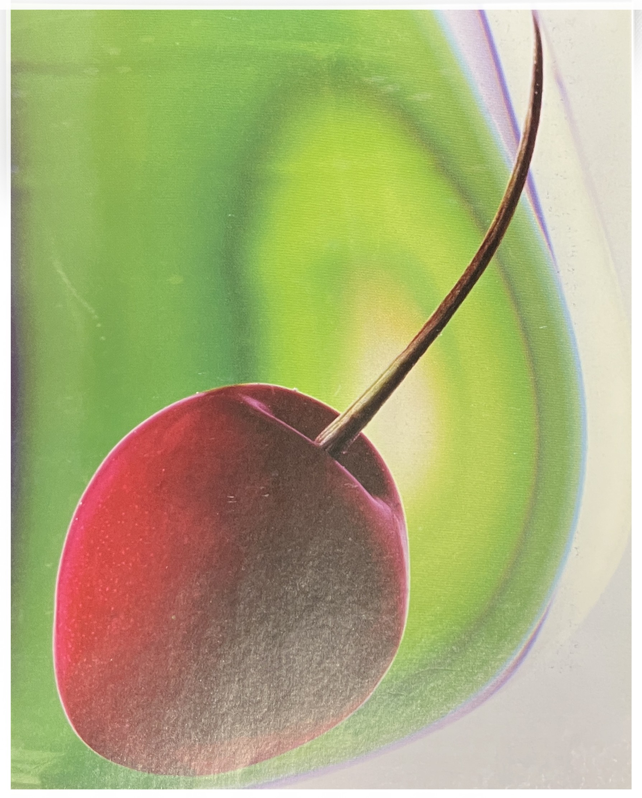
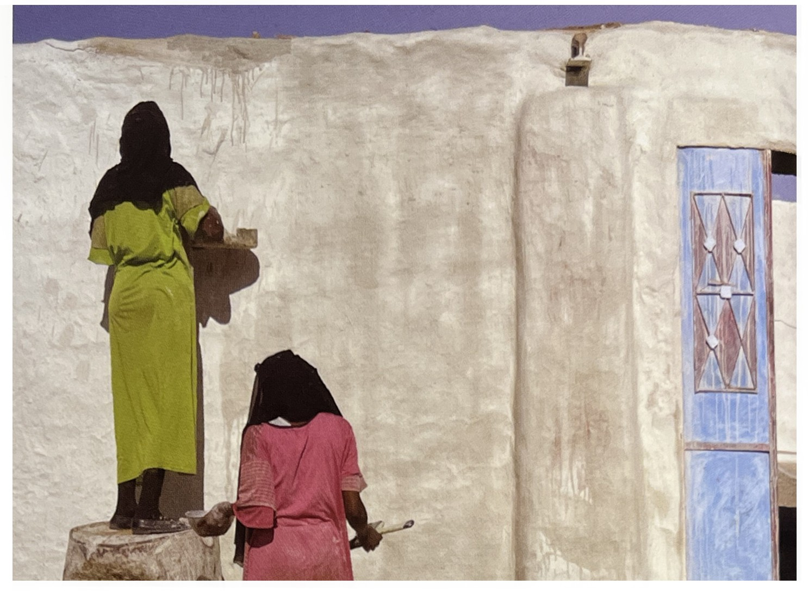
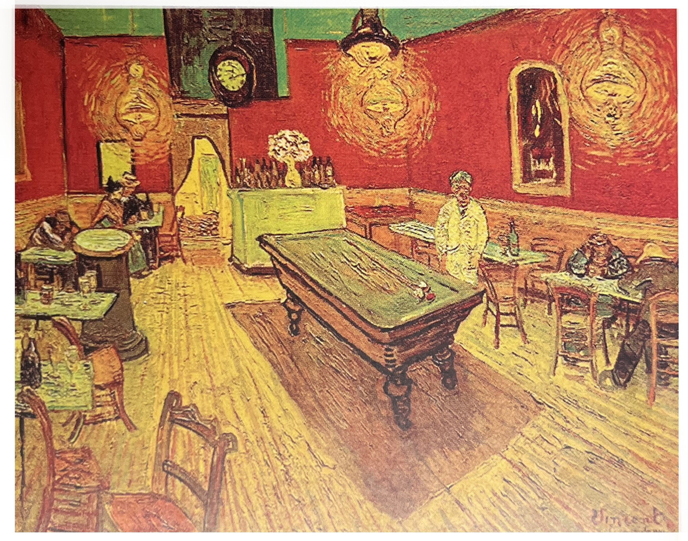

✓ 서로 균형을 이루는 것으로 인식되는 보색의 원리는 충분한 연구가 이루어졌고,
망막 신경에서 색 대립세포(color opponent cell)의 효과를 내는
것으로 알려지고 있다.
삼원색(빨, 노, 파)의 보색들은 초록, 오렌지, 보라이며,
보색 쌍들은 대부분의 사람들이 조화를 이룬다고 인식한다.
✓ 독일의 시인 괴테는 상대적인 밝기를 고려함으로써 이런 균형을
규명한 최초의 인물이었다.
예를 들어서 빨강과 초록은 밝기가 항상 동등하지는 않다.
채도 또한 다양하며, 무엇보다도 빨강 혹은 파랑이라고 단순하게
말하는 것은 일정영역의 파장들을 말하는 것일 수도 있다,

➪ 조화로운 색상 짝 :
❍ 사진에서 가장 흔한 보색 쌍
✓ 색온도 스케일은 맑은 하늘에 해가 떴을 때,
또는 황혼에 실내에 있는 텅스텐 조명과 외부의 파란 기존 광이 있을 때면
파랑/오렌지 콘트라스트를 만들어 낸다.
예를 들어서 태양이 하늘의 한쪽 끝에 있을 때는 공기 중에 흩어져
있는 입자들이 다른 파장들보다는 짧은 파장(파랑 계열)에 더 영향을 미친다.


➪ 조화로운 색상 짝 : 빨강과 초록 같은 보색은 색상환에서 반대편에 위치한다. 각 색조는 서로의 강도를 높여주며, 하나의 이미지 안에서는 조화의 균형을 만들어 냔다.
❍ 색상 조화[1/p95]
✓ 예술과 사진에서 색은 연구해볼 만한 가치가 있는 주제다.
색을 인식하는 방식과 그것을 좋아하는 방식은 주관적일뿐더러 신경과학하고도
연관되어 있다. 그리고 혼합된 색상으로부터 심리학적인 요소들을 추출해내기는
쉽지 않다.
이에 대한 고전적인 이론은 많은 여러 가지 해석들을 통해 진화되어 왔지만,
특정한 색상들이 다른 특정한 색상들과 균형을 이룬다는 개념은 널리 인정되고 있다.
이런 색을 보색이라 하며, 보색을 혼합하면 중간 회색이나 하얀색이 된다.
✓ 색에 관하여 반 고흐는 사계절을 네 가지 보색들의
짝 - 봄은 빨강과 초록, 여름은 파랑과 오렌지, 가을은 노랑과 보라,
겨울은 검정과 흰색 - 으로 그리는 것에 관해 이야기 했다.
하지만 아른하임은 반 고흐가 [밤의 카페](1888)를 그리면서
“인간의 끔직한 열정으로 탓에....
가장 공통점이 없이 빨강과 초록의 충돌과 대비가 모든 곳에 있다.”라고 지적했다.
따라서 색상은 해석의 가능성이 무궁무진하며,
또한 수많은 방식으로 병치되는 색들로 그 해석이 달라진다.
두드러지고 강렬한 영역들이 뒤섞여 배치되면
동일한 색상을 가진 작고 눈에 잘 띄지 않는 덩어리들에 대하여
다른 효과를 갖게 된다.
그래서 반 고흐가 [밤의 카페]에서 사용했던 초록빛을 띠는 노랑은
그가 옥수수 밭에서 사용한 따뜻한 노랑과는 효과가 다르다.

➪ 반 고흐의 [밤의 카페]
[참고문헌]
[1] 사진가 마인드, ‘마이클 프리맨’지음, 김문호 옮김, 비즈앤비즈, 2011.10.25.
[2] 원하는 사진을 어떻게 찍는가, 김성민, 소울메이트, 2015. 2. 9.
....
....
....
....
....